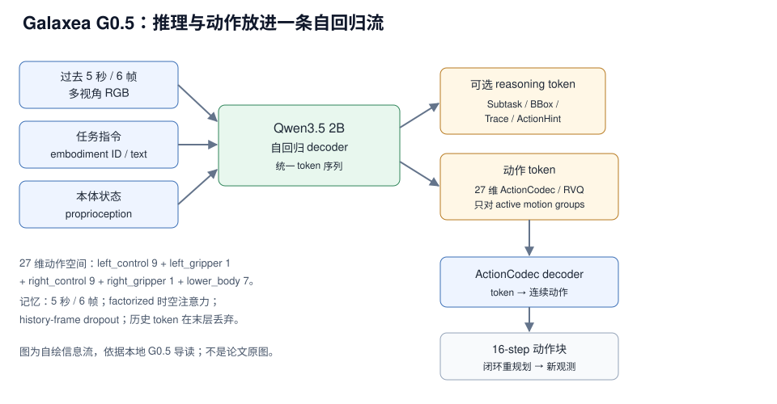

G0.5 用 Qwen3.5 2B 的同一个 decoder 连续生成结构化 reasoning token 与 27 维 ActionCodec 动作 token，并用过去 5 秒 6 帧多视角历史补短期视觉记忆；动作以 16 step chunk 闭环执行。官方 README/模型卡经本地章节转述的公开数字是：DROID zero-shot 82.5%、Bridge-SimplerEnv 87.3%、RoboTwin 2.0 93.3%、LIBERO 98.9%、BEHAVIOR-1K task success score 0.3136、R1-Lite/R1-Pro 真机微调后平均 76.7%。这些数字未在本机复测，benchmark 协议不同，不能合成一个平均分。
来源约定：本文事实只取自本仓库 G0.5 导读，没有用模型记忆补写论文细节。
标注约定：【官方】指本地章节转述的官方 README/模型卡/项目页作者报告；【章节】指本地章节自己的归纳；【待核】指外部调研文件给出、本地章节未确认。
版本：技术报告 2026-06 公开；代码 commit 章节未给；查阅日期 2026-11-01。
1. 论文与官方资源
| 资源 | 网页来源 | 说明 |
|---|---|---|
| 论文 | Galaxea_G0_5.pdf | 本地章节给出的官方技术报告 |
| 源码 | OpenGalaxea/GalaxeaVLA | 训练、评测、部署入口 |
| 权重 | OpenGalaxea/G05 | gated；需登录并同意条件 |
| 项目页 | opengalaxea.github.io/G05 | 图、视频、benchmark 展示 |
| 数据集 | Galaxea-Open-World-Dataset | 500+ 小时移动操作数据（RLDS/LeRobot） |
论文题目：Galaxea G0.5 Technical Report；公开时间：2026-06；arXiv：本地章节未给，2608.11739 为外部调研文件给出，待核（S21）；代码 commit：章节未给；查阅日期：2026-11-01。
版本提示：本地章节把 G0 描述为 dual-system VLA（VLM 做多模态规划、VLA 做细粒度执行），G0Plus/G0Tiny 是更早的 release line，G0.5 是 unified autoregressive VLA。当前分支聚焦 G0.5；旧 G0Plus Dockerfiles、Fold Towels/Handover Gift demo guides 和 pi0/pi0fast training configs 已不在当前分支，旧文件布局需查指定历史 commit。
许可与访问：GitHub README 写明，G0.5 相关内容从 2026-06-16 之后采用 G0.5 Community License Agreement，允许非商业用途（学术研究、个人使用、教育、评测）；商业部署、向第三方提供服务或产品化需要单独商业授权。HF 模型仓库公开可见，但需要同意访问条件才能下载文件。
2. 核心问题：把推理、记忆与动作放进一条流
一句话：G0.5 重新分配的是“推理、动作表征、跨本体控制”三者的接口——不再让外部 planner 写推理、另一个 action head 出动作，而是让同一个 transformer decoder 在一条 next-token 序列里写完 CoT 再写动作 token。【章节】

图 1：G0.5 的推理、记忆与动作 token 信息流。自绘，依据本地导读；不是论文原图。
对比主流路径：VLM-as-Encoder + 独立动作头（连续回归 / diffusion / flow matching）→ VLM-as-Actor + 自回归动作 token。
- 节省了什么：不需要单独的 planner/action expert 接口；动作 token 与 CoT 在同一序列里，可以直接 attend 到前面的中间结果。
- 保留了什么：VLM 的视觉语言预训练；通过 VQA 混训保留语言理解、视觉问答与开放词汇 grounding。
- 代价是什么：动作必须离散化，tokenizer 与 decoder 设计更复杂；序列变长；新本体仍需动作布局、归一化与控制频率配置。
- 读者该学什么：把“动作表示”当成接口设计问题，而不是只替换一个动作头。
3. 模型结构与张量流
3.1 输入、输出与 Backbone
G0.5 从 Qwen3.5 2B VLM 初始化。输入是过去 5 秒内采样的 6 帧多视角 RGB、embodiment ID / embodiment text、自然语言任务指令、proprioception / robot state；输出是可选 CoT reasoning tokens 加必需 action token sequence，再经 ActionCodec decoder 还原为连续动作 chunk。【章节】
序列按 chat-like 组织：system 消息含 embodiment、控制频率与动作空间；user 消息含任务指令；sensor 区域放视觉观测；assistant 输出同时含思考字段与动作字段。conditioning segment 是用户侧输入，不计算 loss；assistant 侧 reasoning tokens 与 action tokens 都用 cross-entropy 训练。【章节】
3.2 视觉记忆：5 秒窗口、6 帧、历史 token 末层丢弃
章节把它描述为短期视觉工作记忆，不是检索式记忆库，也不是世界模型 rollout：
- 窗口：过去 5 秒内采样 6 帧多视角 RGB，送入视觉编码器。
- 融合：factorized spatial-temporal attention 注入历史信息。
- 正则：预训练时使用 stochastic history-frame dropout，降低模型死记某个固定历史帧组合的风险。
- 延迟控制：历史 token 在最后一层被丢弃。
章节给出的动机是单帧不知道“刚才发生了什么”，例如目标刚被夹爪碰过、抽屉刚被拉开、机械臂遮挡目标、当前步骤依赖上一步是否完成；因此补最近几秒的视觉上下文，让模型知道当前动作处在任务过程的哪个阶段。章节没有给 5 秒/6 帧的选型消融，也没有给 dropout 概率、历史 token 数量或丢弃层的实现细节。【章节】
3.3 ActionCodec：27 维共享动作空间与 RVQ
不同机器人自由度和动作布局不同。G0.5 先把活跃运动部件映射到共享 27 维动作空间，再离散成 action token；只对当前机器人实际存在的 active motion groups 出 token，不为不存在的自由度填无意义 token。【官方】
| 部件组 | 维度 | 说明 |
|---|---|---|
left_control | 9 | 左臂控制 |
left_gripper | 1 | 左夹爪 |
right_control | 9 | 右臂控制 |
right_gripper | 1 | 右夹爪 |
lower_body | 7 | 章节只给组名，未展开 |
| 合计 | 27 | 9 + 1 + 9 + 1 + 7 |
维度账本（按章节分组直接相加，不是论文公式）：
dim(a) = 9 + 1 + 9 + 1 + 7 = 27
RVQ 的作用是“多轮精修”：连续动作 chunk 先经 action encoder，第 0 轮 VQ code 给出粗动作，第 1 轮 VQ code 修残差，后续轮次继续修残差，最后 action token 序列经 action decoder 重构连续控制。章节用这种设计解释“动作 token 能被 LLM 式 decoder 生成，同时又不只用一个粗糙离散码表示复杂动作”。【章节】
token 侧按部件分组，例如 <left_control_0> 后接左臂某一轮 residual quantization 的 <action...> token，<left_gripper> 后接夹爪 token；多组动作 token 组合后再由 ActionCodec 解码。章节没有给出码本大小、RVQ 层数、量化公式、每段 16-step chunk 的 token 数或 action decoder 结构。【章节】
3.4 结构化 CoT 与序列布局
| 字段 | 章节定义 | 对动作的作用 | 是否必需 |
|---|---|---|---|
Subtask | 当前原子子任务 | 把长任务拆成短阶段，例如先抓毛巾、再移到水池 | 可选 |
BBox | 关键目标框 | 把语言目标落到图像位置，降低抓错物体概率 | 可选 |
Trace | 2D gripper landing trace | 给出夹爪落点和粗轨迹，帮助动作 token 对齐目标 | 可选 |
ActionHint | 帧级动作提示 | 用短语约束动作趋势，例如靠近、闭合夹爪、移动到容器上方 | 可选 |
CoT span 可以采样任意子集，甚至 no-CoT；它不是“每步必须输出完整解释”，而是按任务复杂度决定是否生成中间推理。动作字段以 Action: 引导，后接分组 action token。因为 reasoning tokens 与 action tokens 在同一个 assistant span 里连续生成，动作 token 的上下文能直接看到 Subtask、BBox、Trace、ActionHint；章节用这一点解释 AR 比 FM 更受益于 CoT。【章节】
执行是 chunked closed-loop：图中第一段 action 已执行完 16/16 steps，第二段正在执行 4/16 steps。这说明 G0.5 不是一次性预测整条长轨迹，而是每段 16 step，执行过程中根据新观测重新生成后续 action chunk。【官方】
4. 实验结果
章节只给公开结果的汇总数字，没有给逐 benchmark 的任务数、每任务 trials、种子或成功判定细则。下表把“章节给出的设定/数字”与“不能说明什么”放在一起，避免把不同口径横比。
| Benchmark | 章节给出的设定 | 协议细节 | G0.5 数字 | 读法 |
|---|---|---|---|---|
| DROID zero-shot | DROID/Franka 真实机器人数据与任务；项目页对比 π0.5-DROID、MolmoAct2-DROID、G0.5-DROID | 任务数/trials/种子未给；baseline 数值未给 | 82.5%【官方】 | 支持 DROID 设定下的 zero-shot 操作；不等于任意机器人零样本 |
| Bridge-SimplerEnv | 章节只列名称 | 未给 | 87.3%【官方】 | 不能与 DROID 真机结果视为同一口径 |
| RoboTwin 2.0 | 章节只列名称 | 未给 | 93.3%【官方】 | 协议未展开，不能拆任务子集 |
| LIBERO | 章节只列名称 | 未给子套件与 trials | 98.9%【官方】 | 章节只给总分，不能拆子套件 |
| BEHAVIOR-1K | 章节只给指标名 | task success score | 0.3136【官方】 | 章节未说明量纲，不能当作百分制成功率与 82.5% 直接比 |
| R1-Lite / R1-Pro 真机 | 真实机器人 fine-tuning 后 | 任务、演示数、微调步数、测试次数未给 | 平均 76.7%【官方】 | 微调后结果，不是 zero-shot |
| Pick-and-Place（官方自设） | 多物体/容器；先按语言找目标，再 pick，再 place；横轴 post-training 数据量 | zero-shot、1H、10H、50H 四档；语言跟随率与任务成功率 | 四档均高于 π0.5；具体数值未给【官方】 | 支持“预训练 + 少量后训练快速适配”，但任务是官方自设局部证据 |
读法：
- DROID zero-shot 与真机 76.7% 不是同一口径；前者 zero-shot，后者 fine-tuning 后平均。
- BEHAVIOR-1K 的 0.3136 是章节所称 task success score，章节未说明量纲，不应直接当作百分制成功率。
- 章节没有给 π0.5 / MolmoAct2 的具体数值、参数量、显存或延迟，因此无法在此搭一张标准的“模型 / 参数量 / 显存 / 延迟 / 成功率”对照表；强行补列会变成编造。
- 这些结果能支持的核心论点是：动作 tokenization 足够好时，自回归 decoder 可以直接承担动作生成，而不只做语言规划或视觉编码；不能证明自回归动作头在所有任务上优于 flow matching / diffusion。
- 章节把公开结果称为 SOTA，但同时要求按协议分开读；本文只记录数字与口径，不复述该判断。
来源：本地 G0.5 导读的官方 README、模型卡与项目页转述。
5. 消融实验
章节只给 CoT 探针实验的方向性结论，没有给逐项数值。实验比较 FM, no CoT、FM, CoT、AR, no CoT、AR, CoT 四种组合，在 Air Fryer 与 Cook Bacon 两个未见长时程任务上看 process score 与 language following。【官方】
| 对照 | 任务 / 指标 | 章节结论 | 数值 |
|---|---|---|---|
| CoT 开 / 关，AR | 单阶段 PP Bench 成功率 | 提升不大 | 未给 |
| CoT 开 / 关，AR | Air Fryer / Cook Bacon（五阶段、未见）process score + language following | 提升明显 | 未给 |
| AR vs FM，matched CoT | 同上长时程任务 | AR 更受益 | 未给 |
| 四组合探针 | 两个未见长时程任务 | AR, CoT 提升最明显 | 未给 |
章节的解释是：AR action tokens 与 CoT 在同一生成流里，动作 token 可以直接 attend 到前面的 CoT；flow-matching expert 通常只能条件在隐藏状态摘要上，利用 CoT 的方式更间接。因此短任务里 CoT 可发挥空间有限，长任务里“先拆阶段、再找物体、再排动作顺序”的结构化 CoT 更有用。【章节】
读者该不该复用：如果任务是长时程、可分解、需要语言 grounding，结构化 CoT 值得加；短任务或单阶段抓放，收益可能不足以抵消序列变长与生成成本。章节没有给 Subtask/BBox/Trace/ActionHint 的字段级消融，也没有给 5 秒/6 帧、chunk 16、RVQ 层数的消融；本文不补写这些数字。
来源：本地章节 §13 转述项目页探针实验。
6. 延迟与显存怎么读
章节没有给模型延迟、完整请求延迟、重规划间隔或控制频率的数值，只给了硬件门槛与 checkpoint 体积。因此不能从 2B 参数量推算延迟，也不能用 1000 / 延迟 计算策略调用频率。
| 项目 | 章节给出的数值 | 口径 |
|---|---|---|
| 推理显存 | > 8 GB | RTX 3090 / RTX 4090 |
| 全量微调显存 | > 70 GB | A100 80GB / H20 96GB |
| 单个 G0.5 checkpoint | 约 11 GB | 模型权重 |
| 含 RoboTwin checkpoint 的完整布局 | 约 55 GB | 完整下载布局 |
共享 action_tokenizer.pt | 约 484 MB | ActionCodec 共享 tokenizer |
| 软件栈 | Python >=3.10.16,<3.11；CUDA 12.8；PyTorch 2.7.1 cu128；flash-attn-4；flash-linear-attention；ffmpeg | 官方测试环境，经章节转述 |
读法：
- 推理门槛 >8GB 只说明能加载，不说明控制频率；全量微调 >70GB 说明 2B 模型也不能按“小模型”假设单卡低成本全参训练。
- 章节提到“历史 token 在最后一层被丢弃，用来控制推理延迟”，这是设计意图，不是测量结果；实际延迟必须本机测。
- 测量时应分开记录模型前向延迟、完整请求延迟（含图像预处理/通信）与重规划间隔（chunk 16 的执行时长）；章节没有给控制频率，无法把 16 step 换算成秒。
1000 / 延迟只说明策略调用频率，不等于动作执行频率或端到端反馈频率。
来源：本地章节 §15.1。
7. 训练资源与卡数
章节没有给 GPU 数、优化器步数、有效 batch、每卡 microbatch、梯度累积、学习率、warmup、EMA 或冻结模块，因此无法填出标准训练配方表，也无法用“GPU 数 × microbatch × 累积步数”反推有效 batch。能确认的是数据组成与训练目标：
| 数据类别 | 章节给出的内容 | 在训练中的作用 |
|---|---|---|
| 机器人演示 | 14 种 embodiment；Galaxea Open-World Dataset 500+ 小时真实移动操作；RLDS 与 LeRobot 格式 | 提供 action token 序列，用 CE 训练 |
| Web 数据 | 大规模 web 数据 | 章节只给类别，未单独说明作用 |
| Embodied VQA | 与动作样本混训；VQA-to-action mixing ratio = 1:4 | 保留语言理解、视觉问答、开放词汇 grounding |
| 场景 / 物体覆盖 | 家庭、厨房、零售、办公室；高频动作 pick/place/move/put/take；物体 towel/spoon/cloth/bowl/water/cup | 开放世界操作词汇（项目页数据分布图） |
训练目标：conditioning segment 不计算 loss；assistant 侧 reasoning tokens 与 action tokens 共用 cross-entropy。章节把这称为 “VLM-as-Actor”：不是 VLM 给特征、action expert 做控制，而是 VLM decoder 本身就是 action token generator。【章节】
三级复现的可行性：
- 理解与评测：可行，但需要 gated 权重与对应 simulator / 真机；官方 smoke test 只证明环境可导入、配置可解析、
g05路径可见。 - 训练链路：章节没有给配方，只能确认全量微调显存 >70GB；无法从章节复现损失、梯度与保存链路。
- 完整训练：章节未给卡数、步数、batch、学习率与数据采样细节，不能声称可复现论文训练。
来源：本地章节 §10、§15。
8. 代码阅读顺序
章节给出的路径有限；下表前半是章节明确给出的入口，后半是模块级阅读顺序，具体文件路径需按固定 commit 核对。
| 顺序 | 路径 / 模块 | 阅读重点 |
|---|---|---|
| 1 | tools/resolve_config.py | 配置解析；章节示例查 model.model_arch 与 data.embodiment_datasets.galaxea_r1pro.dataset_groups |
| 2 | experiments/libero、scripts/run/eval_libero.sh | LIBERO 评测入口；需要 LIBERO simulator |
| 3 | experiments/robotwin | RoboTwin 2.0 评测；需要 RoboTwin 依赖与资产 |
| 4 | experiments/so100 | SO-100/101 部署；需要真实硬件 |
| 5 | experiments/r1lite、experiments/r1pro | R1 Lite / R1 Pro 部署；需要 Galaxea 硬件与 ROS2 |
| 6 | experiments/droid + OpenGalaxea/droid-franka-client | DROID / Franka 部署；需要 Franka/DROID 控制链路 |
| 7 | 模型定义模块 | Qwen3.5 backbone、conditioning/generative 序列布局；路径待按 commit 核对 |
| 8 | ActionCodec 模块 | 27 维分组、active parts 掩码、RVQ、action decoder；路径待按 commit 核对 |
| 9 | 训练 / 数据模块 | VQA:action 1:4、CE 目标、RLDS/LeRobot 加载；路径待按 commit 核对 |
坑（章节明确提示）：
- 换机器人时最容易错的不是 forward，而是 action layout、normalization stats、active parts、ROS topic 与安全限幅。
- 当前分支聚焦 G0.5；旧 G0Plus Dockerfiles、Fold Towels/Handover Gift demo guides、pi0/pi0fast training configs 已不在当前分支，旧布局需查指定历史 commit。
- 权重是 gated + 非商业许可，匿名下载不成立。
9. 从 checkpoint 开始复现
以下命令来自章节转述的官方 README，未在本机验证；路径与参数需按官方仓库当前 commit 替换。
9.1 固定源码与环境
git clone https://github.com/OpenGalaxea/GalaxeaVLA cd GalaxeaVLA uv sync --index-strategy unsafe-best-match source .venv/bin/activate
环境要求：Linux；Python >=3.10.16,<3.11；CUDA 12.8；PyTorch 2.7.1 cu128 wheels；flash-attn-4；flash-linear-attention；ffmpeg。
9.2 权重与加载检查
# 需先登录 Hugging Face 并同意 OpenGalaxea/G05 访问条件
huggingface-cli download OpenGalaxea/G05 \
--repo-type model \
--local-dir checkpoints
python tools/resolve_config.py r1pro --key model.model_arch python tools/resolve_config.py r1pro --key data.embodiment_datasets.galaxea_r1pro.dataset_groups python -c "import torch, g05; print(torch.__version__); print(g05.__file__)"
这组 smoke test 能说明：代码环境可导入、配置系统能解析、PyTorch 与 g05 包路径可见。不能说明：权重下载完整、真机可安全执行、任何 benchmark 已复现。
9.3 选择一个官方入口
- 只看模型与配置：
tools/resolve_config.py（低难度）。 - LIBERO：
experiments/libero/scripts/run/eval_libero.sh（中；需要 simulator）。 - RoboTwin 2.0：
experiments/robotwin（中高；需要依赖与资产）。 - SO-100/101：
experiments/so100（中高；需要真实硬件）。 - R1 Lite / R1 Pro：
experiments/r1lite/experiments/r1pro（高；需要 Galaxea 硬件与 ROS2）。 - DROID / Franka：
experiments/droid+OpenGalaxea/droid-franka-client（高；需要控制链路）。
章节只给这些目录入口，没有给单条评测命令与单卡训练配方；不要自行补写成“官方命令”。
9.4 新本体适配
先配置 active motion groups，再对齐动作归一化与控制频率，最后做单任务开环/闭环检查。不要一开始就上自己的机器人：action token 与 embodiment、parts meta、dataset stats、ActionCodec tokenizer 绑定。
10. 如何用到自己的项目
可复用的是“共享动作空间 + RVQ + 统一 token 流”的组合，不是照搬 2B 模型或它的 benchmark 数字。
- 动作 tokenizer：把 27 维分组换成你的本体分组，只对 active parts 出 token；比较 RVQ、flow matching、连续回归的成功率、token 数与延迟。代价是要有动作数据、码本/解码器和新的归一化统计。
- 短时视觉记忆：把 5 秒/6 帧 + 历史 dropout + 末层丢弃加到现有 VLA；测遮挡恢复、历史长度和延迟。代价是视觉 token 变多，dropout 与丢弃层需要调。
- 统一流与结构化 CoT：把
Subtask/BBox/Trace/ActionHint与动作 token 放进同一 decoder；在长时程任务上测 process score 与语言跟随。代价是序列变长、CoT 生成可能引入错误 grounding，短任务收益有限。